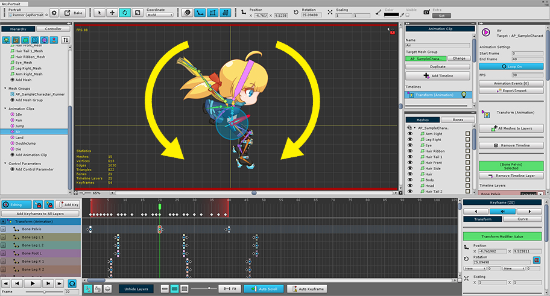
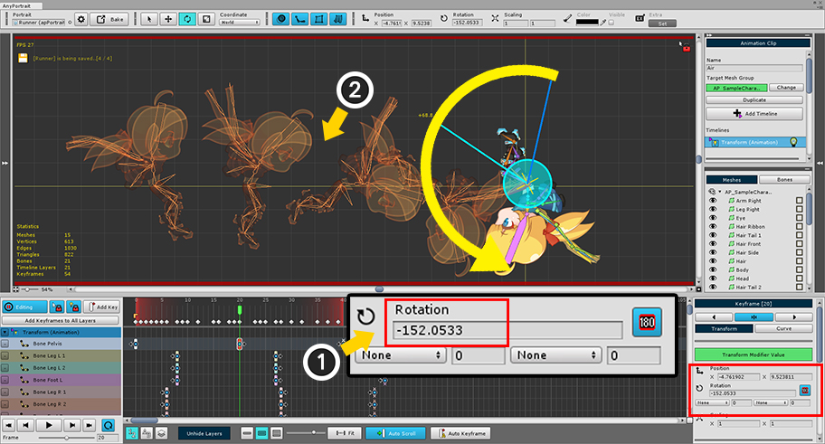
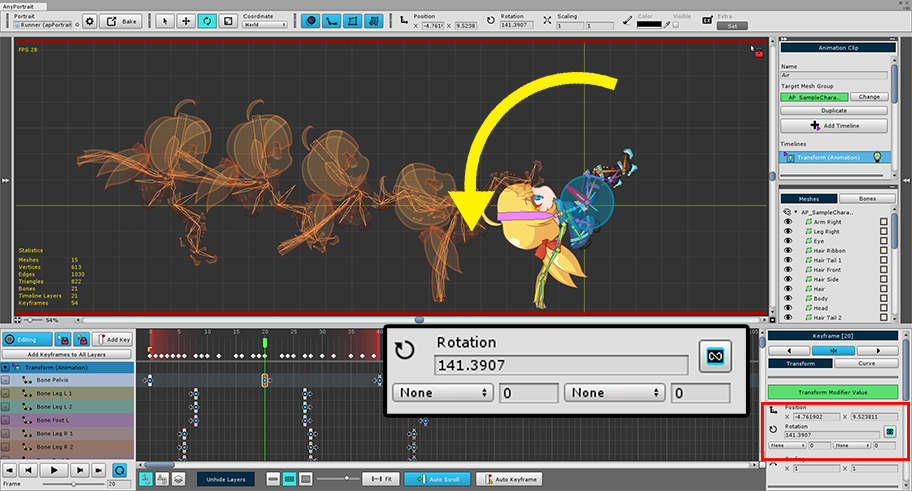
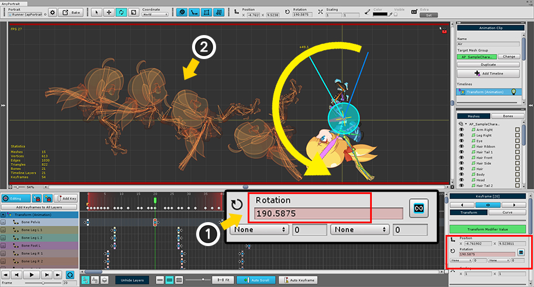

AnyPortrait > マニュアル > 角度を制限せずに回転
角度を制限せずに回転
1.2.2

このページは、アニメーションでオブジェクトの回転角度が制限される特性とその解決方法について説明します。
前ページの説明と一緒にご覧ことをお勧めします。 （関連ページ）
回転アニメーションを作成するときに、どのような制約事項があるか確認してみましょう。

キャラクターを反時計方向に回転してみましょう。
「Onion Skin」機能を利用して、どのようにアニメーションになるか容易に確認することができます。 （関連ページ）
キーフレームの回転値は、現在、約25度です。

キャラクターを反時計回りに少し回してみました。
回転角度が増加し、約139度しました。
（AnyPortraitで角度が増加すると反時計回りに回転します。）
Onion Skinをみるとまだアニメーションに問題がありません。

キャラクターをより多く回転させてみました。
(1) 角度が増加している途中、180度を越えるなんて、むしろ負の値になってしまいました。
(2) Onion Skinに見えるキャラクターも後方回転するのではなく、むしろこれから転がる形になってしまいます。
多くのアニメーションプログラムやシステムの回転角度は、「0〜360」、または「-180〜180」に制限されたりします。
AnyPortraitは、基本的に「-180〜180」以内の値を持つように開発されました。
この方式は、編集中に誤った入力にオブジェクトが過度に多く回転することを防止し、IKなどの計算が容易になる利点があります。
しかし、上記のように、多くの変化量を持つ回転アニメーションを作ろうとするときに問題が発生する可能性があります。
したがって、上記のような問題が発生した場合、キーフレームは、-180度より小さいか180度以上の値を持つように制限を解除する必要があります。

(1) キーフレームを選択して、キーフレームのプロパティのUIを確認します。 （「Transformタブ」を選択します。）
(2) 「180度に制限ボタン」を押して (3) 回転角度制限を解除します。
再びキャラクターを回転させてみましょう。

上記のような方法でキャラクターを反時計回りに回転します。
まだ問題がありません。

(1) より回転してみると、今度は角度が負の値にならず180度より大きな値の角度で回転されます。
(2) アニメも正常になることを見ることができます。
注意
回転角度の制限は、キーフレームの属性ではなく、エディタの一時的な設定です。
直接回転角度の制限を解除しない限り、基本的に角度は常に制限されます。
したがって、上記のような問題が発生した場合にのみ、一時的に制限を解除願います。